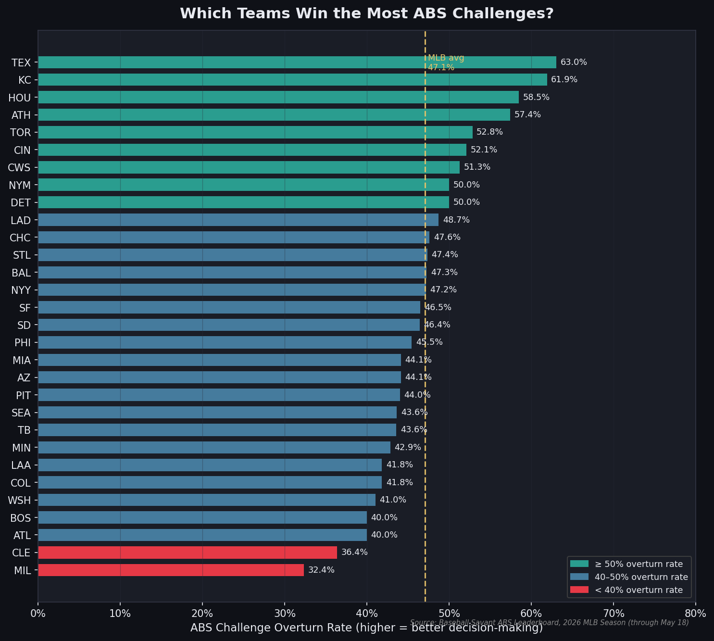
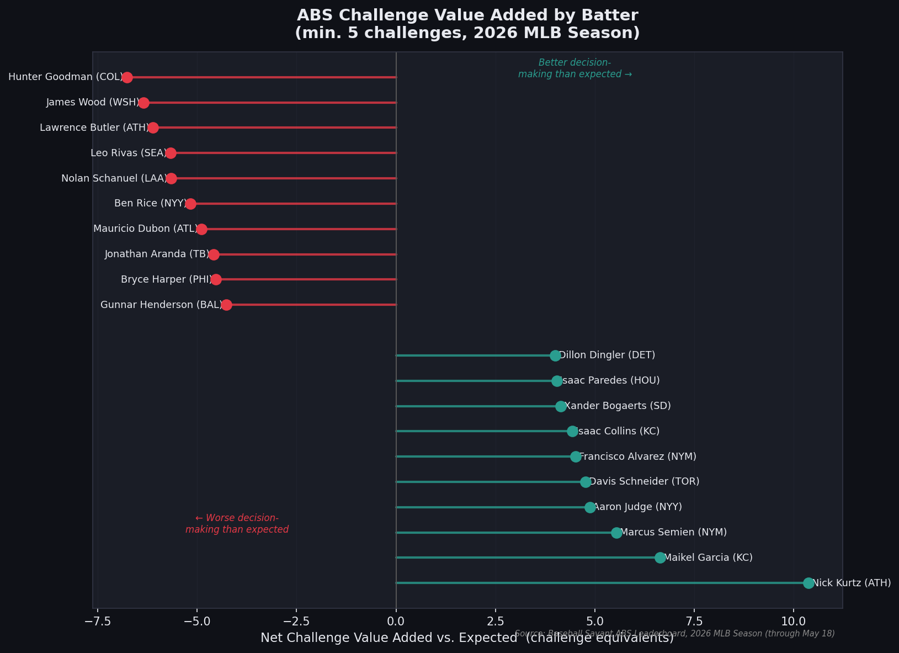
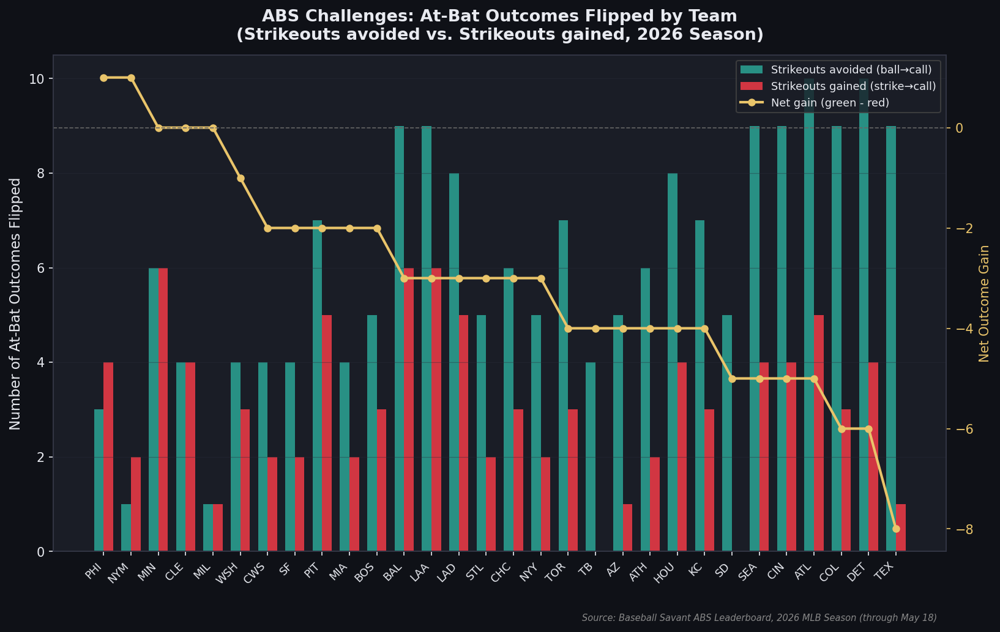
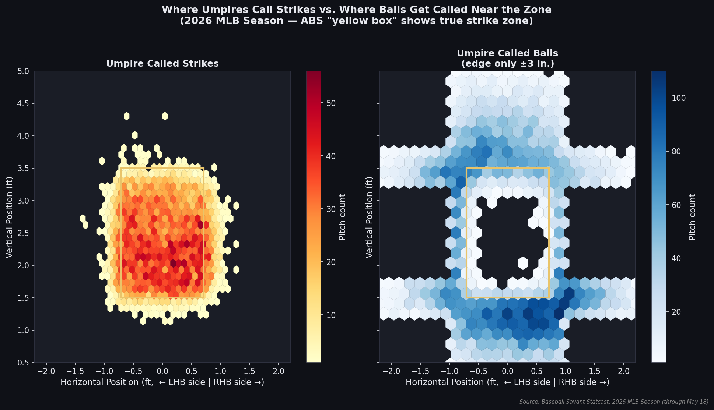
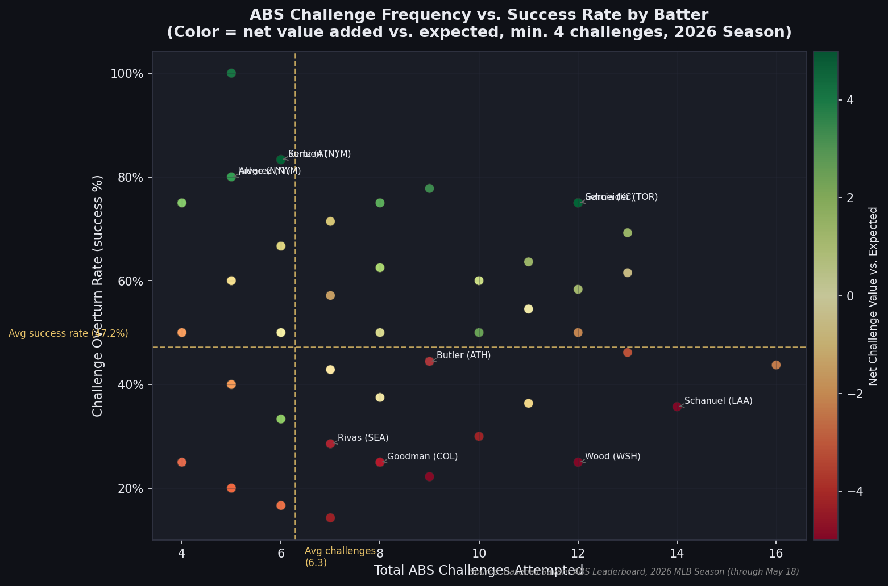

How the Automated Ball-Strike system is changing the rules of baseball — pitch by pitch, challenge by challenge.
DSC 106 · University of California, San Diego · Spring 2026
For 150 years, baseball's most contested moment — the ball-or-strike call — has lived entirely in the hands of a human umpire. In 2026, that changed forever. The MLB's Automated Ball-Strike (ABS) Challenge System, powered by Hawk-Eye camera technology, gives every batter and pitcher a tool that no player has ever had: the ability to appeal to a machine.
The rules are simple. Each team gets three challenges per game. If a batter thinks a pitch was called incorrectly, they can freeze — tap the helmet — and within seconds, the ABS system renders its verdict using 12 cameras tracking the ball to a fraction of an inch. Challenges that succeed preserve the challenge count. Challenges that fail cost one. The result? A new layer of chess embedded in every at-bat, where reading the zone is now as valuable as reading a pitcher's spin.
Our project builds an explorable explanation of exactly how ABS is reshaping the game — who challenges, when they challenge, whether they win, and what it all means for outcomes that actually matter.
Two complementary datasets from MLB's official Statcast platform at
baseballsavant.mlb.com. The ABS leaderboard provides per-player
challenge statistics (overturn rates, value added, outcome flips).
The Statcast pitch feed provides pitch-by-pitch location data for the full
2026 season, including automatic_ball
and automatic_strike
descriptions where ABS overrode the umpire's call.
All data is fetched live from Baseball Savant's public CSV export endpoints and
refreshed via our fetch_data.py
pipeline. No data is synthetic — every row represents a real pitch or real challenge
from the 2026 MLB regular season.
We will build an interactive explorable explanation that takes a reader through the story of ABS from first principles — what the system is, why it matters, and what the 2026 season data reveals about how players, teams, and umpires are adapting. The page will open with an animated strike zone visualization that immediately shows the gap between where umpires call strikes and where the ABS system does, making the entire motivation visceral before a single word of explanation is read. From there, scrollytelling panels will guide the reader through team-level strategy differences, individual batter decision-making quality, and the downstream impact on strikeout and walk rates — the outcomes that matter most in the modern game.
All major visualizations will use D3.js with interactive brushing, filtering, and tooltip layers. The final deliverable will be a GitHub Pages site that fetches fresh data automatically.
The most technically challenging design decision is the dual strike zone visualization. The ABS zone boundary shifts by batter height (it's set individually per batter), while umpires use a perceptual zone that varies by situation, count, and handedness. Overlaying these two "zones" in a way that is honest to the data but intuitive to a non-technical reader — without implying false precision — requires careful encoding choices. We will likely use kernel density estimation to smooth the umpire zone and contrast it with the sharp rectangular ABS boundary, while offering batter-level filtering to reveal how much the zone actually moves per player. The secondary challenge is data freshness: the 2026 season is ongoing, so our pipeline needs to fetch and re-render data reliably for the final submission date.
Five exploratory visualizations drawn from the live 2026 Baseball Savant data, illustrating the key angles our interactive project will expand upon.

Batter challenge overturn rates for all 30 MLB teams (minimum 20 team challenges), ranked by success percentage. Texas leads the league at 63%; Milwaukee sits last at 32%. The dashed line marks the MLB average (~47%), revealing which franchises have already taught their hitters to pick their spots wisely.

Net challenge value above expectation for qualified batters (min. 5 challenges). Players on the right extracted more challenge equity than a random batter in the same situations would; players on the left wasted challenges on low-probability pitches. Davis Schneider (TOR) leads all MLB batters by a wide margin.

Number of strikeouts avoided (called strike overturned to ball) versus strikeouts gained (ball overturned to called strike) by team. The yellow line shows net gain — Atlanta and Colorado have given back nearly as many strikeouts as they've avoided, while Detroit and Los Angeles (NL) show strongly positive net challenge returns.

Hexbin density maps for 2026 regular season pitches. Left: where umpires are calling strikes — note the shadow zone below the bottom boundary and the generous inside corner. Right: called balls that landed within 3 inches of the zone boundary — the high-probability challenge territory that well-trained batters are now identifying in real time. The yellow rectangle marks the true ABS strike zone.

Each point is a qualified MLB batter (min. 4 challenges). The color axis shows net value added — green batters are extracting positive value, red batters are destroying it. The quadrant above average success rate / below average frequency contains the most disciplined challengers; the bottom-right quadrant reveals players who challenge often but poorly.